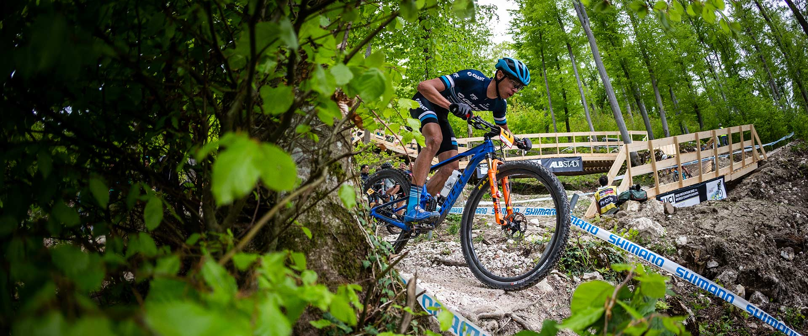
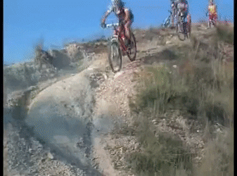

AMO EL MOUNTAIN BIKE
Me llamo Marcelo, vivo en Pichilemu y estudio arquitectura,
aparte de la arquitectura, una de mis grandes pasiones es el MTB
o mas conocido como ciclismo de montaña

Al hacer click en la imagen encontrarás uno de los mejores canales de MTB chileno en Youtube

Al hacer click en el gif, encontrarás rutas dentro del balneario de pichilemu
rutas que te conectarán con el paisaje y la naturaleza.